CODING AGENTS AS PIXEL WORLD MODELS
traex/DeepSeek-V4.1-Flash · 0141
点击播放 · 原生 RGB 像素
逐轮保存的候选
回放视频、检查图与代码变化。
每份候选均可单独播放。实际图片检查记录在下方工具轨迹中。
候选 01播放与检查图
点击播放 · 原生 RGB 像素
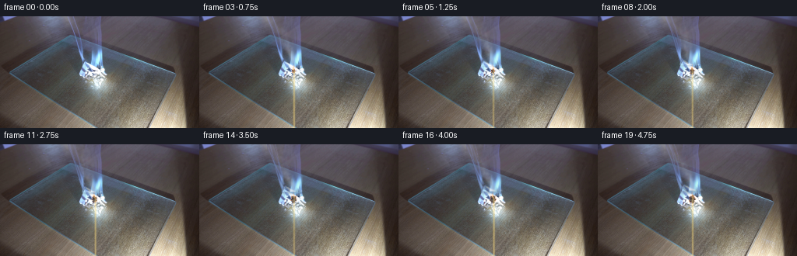
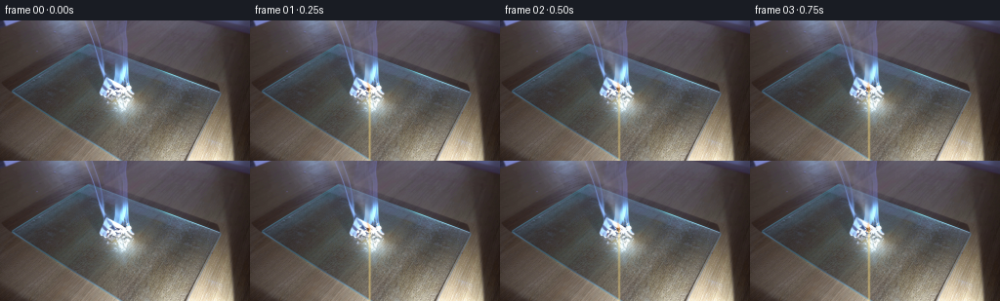
展开代码变化
--- 上一保存版本
+++ 本次保存版本
@@ -0,0 +1,235 @@
+from pathlib import Path
+
+import cv2
+import numpy as np
+from PIL import Image
+from scipy.ndimage import gaussian_filter
+
+import artifact_io
+
+
+WIDTH = 256
+HEIGHT = 144
+FRAME_COUNT = 20
+FPS = 4
+
+
+def smoothstep(edge0, edge1, value):
+ value = np.clip((value - edge0) / (edge1 - edge0), 0.0, 1.0)
+ return value * value * (3.0 - 2.0 * value)
+
+
+def make_noise(seed, height, width, sigma):
+ rng = np.random.default_rng(seed)
+ noise = gaussian_filter(rng.standard_normal((height, width)), sigma=sigma)
+ noise -= noise.min()
+ noise /= max(noise.max(), 1e-8)
+ return noise.astype(np.float32)
+
+
+def smoke_texture(base, source_x, source_y, time):
+ """Render a soft, rising plume at 2x resolution for cleaner edges."""
+ scale = 2
+ h, w = HEIGHT * scale, WIDTH * scale
+ yy, xx = np.mgrid[0:h, 0:w].astype(np.float32)
+ x = xx / scale
+ y = yy / scale
+
+ rise = np.maximum(source_y - y, 0.0)
+ envelope = np.exp(-rise / 44.0)
+ envelope *= smoothstep(source_y + 1.5, source_y - 2.5, y)
+
+ density = np.zeros_like(x, dtype=np.float32)
+ for index, (speed, drift, phase, width_scale, strength) in enumerate(
+ (
+ (12.5, 0.36, 0.0, 1.00, 0.72),
+ (10.2, 0.47, 1.7, 1.35, 0.48),
+ (14.6, 0.27, 3.4, 0.78, 0.42),
+ )
+ ):
+ center = (
+ source_x
+ - drift * rise
+ + (1.1 + 0.14 * rise) * np.sin(rise / 11.0 - time * (1.35 + index * 0.22) + phase)
+ + 0.22 * time
+ )
+ width = (1.4 + 0.105 * rise) * width_scale
+ core = np.exp(-0.5 * ((x - center) / width) ** 2)
+
+ noise_y = np.mod((y + speed * time + index * 73.0) * scale, 340)
+ noise_x = np.mod((x * 1.6 + index * 41.0) * scale, 512)
+ noise_map = make_noise(17 + index, 340, 512, 2.4)
+ noise = cv2.remap(
+ noise_map,
+ noise_x.astype(np.float32),
+ noise_y.astype(np.float32),
+ cv2.INTER_LINEAR,
+ borderMode=cv2.BORDER_REFLECT,
+ )
+ fine = cv2.remap(
+ make_noise(91 + index, 420, 620, 1.2),
+ np.mod((x * 2.1 + 30 * index) * scale, 619).astype(np.float32),
+ np.mod((y * 1.4 + speed * 1.2 * time + 80 * index) * scale, 419).astype(np.float32),
+ cv2.INTER_LINEAR,
+ borderMode=cv2.BORDER_REFLECT,
+ )
+ texture = smoothstep(0.30, 0.78, 0.72 * noise + 0.28 * fine)
+ density += strength * core * (0.30 + 0.70 * texture)
+
+ density *= envelope
+ density = gaussian_filter(density, sigma=1.25)
+ density = np.clip(density, 0.0, 0.85)
+ alpha = cv2.resize(density, (WIDTH, HEIGHT), interpolation=cv2.INTER_AREA)
+ return alpha
+
+
+def warp_initial_smoke(frame, original, time):
+ """Advect the smoke already present in the source image."""
+ y0, y1 = 0, 66
+ x0, x1 = 87, 148
+ roi = original[y0:y1, x0:x1]
+ background = cv2.GaussianBlur(roi, (0, 0), sigmaX=9.0, sigmaY=9.0)
+ residual = np.maximum(roi - background, 0.0)
+
+ yy, xx = np.mgrid[y0:y1, x0:x1].astype(np.float32)
+ strength = 1.0 - np.exp(-time / 0.65)
+ vertical = 1.35 * time
+ horizontal = strength * (
+ 1.25 * np.sin((yy - y0) * 0.12 - time * 1.15)
+ + 0.35 * np.sin((yy - y0) * 0.045 + time * 0.55)
+ + 0.20 * time
+ )
+
+ map_x = (xx - x0 - horizontal).astype(np.float32)
+ map_y = (yy - y0 + vertical).astype(np.float32)
+ moved = cv2.remap(
+ residual,
+ map_x,
+ map_y,
+ cv2.INTER_LINEAR,
+ borderMode=cv2.BORDER_CONSTANT,
+ borderValue=0,
+ )
+
+ center = 122.0 - 0.40 * (66.0 - yy)
+ feather = np.exp(-0.5 * ((xx - center) / 13.0) ** 2)
+ feather *= smoothstep(66.0, 61.0, yy)
+ feather *= 0.72 * strength
+ frame[y0:y1, x0:x1] += (moved - residual) * feather[:, :, None]
+
+
+def add_smoke(frame, alpha, time):
+ fade = smoothstep(0.0, 0.32, time)
+ alpha = alpha * fade
+ smoke_color = np.array([184.0, 187.0, 188.0], dtype=np.float32)
+ frame[:] = frame * (1.0 - alpha[:, :, None] * 0.56) + smoke_color * (alpha[:, :, None] * 0.56)
+
+
+def add_flame(frame, time):
+ yy, xx = np.mgrid[0:HEIGHT, 0:WIDTH].astype(np.float32)
+ base_x = 121.5
+ base_y = 70.5
+ height = 10.5 + 0.65 * np.sin(time * 7.1)
+ v = np.clip((base_y - yy) / height, 0.0, 1.0)
+ center = (
+ base_x
+ - 1.15 * v
+ + 0.45 * np.sin(time * 5.2 + v * 4.5)
+ + 0.22 * np.sin(time * 9.7 - v * 7.0)
+ )
+ half_width = 0.55 + 2.05 * (1.0 - v) ** 0.62
+ across = np.abs(xx - center) / np.maximum(half_width, 0.25)
+ vertical_gate = smoothstep(1.04, 0.76, v)
+ shape = np.exp(-2.2 * across**2) * vertical_gate
+ shape *= smoothstep(base_y + 0.8, base_y - 1.0, yy)
+
+ inner = np.exp(-4.4 * across**2) * smoothstep(0.88, 0.18, v) * vertical_gate
+ flicker = 0.84 + 0.12 * np.sin(time * 8.4 + 0.7) + 0.06 * np.sin(time * 14.1)
+ fade = smoothstep(0.0, 0.28, time)
+ outer_alpha = np.clip(shape * (0.22 * flicker) * fade, 0.0, 0.40)
+ inner_alpha = np.clip(inner * (0.58 * flicker) * fade, 0.0, 0.78)
+
+ outer_color = np.array([255.0, 93.0, 18.0], dtype=np.float32)
+ inner_color = np.array([255.0, 221.0, 126.0], dtype=np.float32)
+ frame[:] = frame * (1.0 - outer_alpha[:, :, None]) + outer_color * outer_alpha[:, :, None]
+ frame[:] = frame * (1.0 - inner_alpha[:, :, None]) + inner_color * inner_alpha[:, :, None]
+
+
+def add_char_and_ember(frame, time):
+ yy, xx = np.mgrid[0:HEIGHT, 0:WIDTH].astype(np.float32)
+ cx, cy = 120.8, 70.3
+ dx = xx - cx
+ dy = yy - cy
+ angle = np.arctan2(dy, dx)
+ progress = np.clip(time / 5.0, 0.0, 1.0)
+ radius = 1.0 + 2.9 * progress**0.68
+ irregular = radius * (
+ 1.0
+ + 0.15 * np.sin(5.0 * angle + time * 1.7)
+ + 0.08 * np.sin(9.0 * angle - time * 1.1)
+ )
+ distance = np.sqrt(dx * dx + (dy * 0.78) ** 2)
+ burn = smoothstep(irregular + 0.55, irregular - 0.75, distance)
+ burn *= smoothstep(63.0, 66.0, yy)
+
+ char_color = np.array([38.0, 29.0, 24.0], dtype=np.float32)
+ brown_color = np.array([91.0, 57.0, 35.0], dtype=np.float32)
+ char_alpha = 0.72 * burn
+ frame[:] = frame * (1.0 - char_alpha[:, :, None]) + char_color * char_alpha[:, :, None]
+
+ ring = np.exp(-((distance - irregular) / 0.85) ** 2) * smoothstep(63.0, 66.0, yy)
+ ring *= 0.24 + 0.09 * np.sin(time * 9.5)
+ frame[:] = frame * (1.0 - 0.32 * ring[:, :, None]) + brown_color * (0.32 * ring[:, :, None])
+
+ ember = np.exp(-((distance - irregular - 0.05) / 0.48) ** 2)
+ ember *= smoothstep(63.0, 66.0, yy)
+ ember *= 0.24 + 0.10 * np.sin(time * 11.3 + angle * 2.0)
+ ember_color = np.array([255.0, 102.0, 22.0], dtype=np.float32)
+ frame[:] = frame * (1.0 - ember[:, :, None]) + ember_color * ember[:, :, None]
+
+
+def add_reflected_glow(frame, time):
+ yy, xx = np.mgrid[0:HEIGHT, 0:WIDTH].astype(np.float32)
+ glow = np.exp(-0.5 * ((xx - 127.0) / 15.0) ** 2 - 0.5 * ((yy - 75.0) / 7.5) ** 2)
+ glow *= smoothstep(91.0, 70.0, yy)
+ pulse = (
+ 0.45 * np.sin(time * 8.2)
+ + 0.28 * np.sin(time * 13.6 + 0.9)
+ + 0.18 * np.sin(time * 4.7 + 2.0)
+ )
+ pulse *= smoothstep(0.0, 0.45, time)
+ delta = glow[:, :, None] * pulse * np.array([20.0, 9.0, 2.0], dtype=np.float32)
+ frame += delta
+
+
+def generate_frames():
+ case_dir = Path(__file__).resolve().parent
+ original = np.asarray(Image.open(case_dir / "first_frame.png").convert("RGB"), dtype=np.float32)
+ frames = np.empty((FRAME_COUNT, HEIGHT, WIDTH, 3), dtype=np.uint8)
+
+ for index in range(FRAME_COUNT):
+ time = index / FPS
+ if index == 0:
+ frames[index] = original.astype(np.uint8)
+ continue
+
+ frame = original.copy()
+ warp_initial_smoke(frame, original, time)
+ plume = smoke_texture(original, 121.2, 61.5, time)
+ add_smoke(frame, plume, time)
+ add_reflected_glow(frame, time)
+ add_char_and_ember(frame, time)
+ add_flame(frame, time)
+ frames[index] = np.clip(frame, 0.0, 255.0).astype(np.uint8)
+
+ return frames
+
+
+def main():
+ case_dir = Path(__file__).resolve().parent
+ frames = generate_frames()
+ artifact_io.save(frames, case_dir)
+
+
+if __name__ == "__main__":
+ main()
候选 02播放与检查图
点击播放 · 原生 RGB 像素
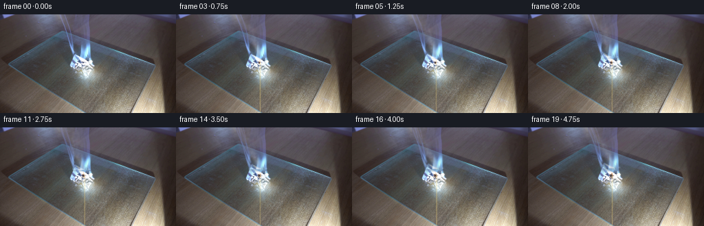
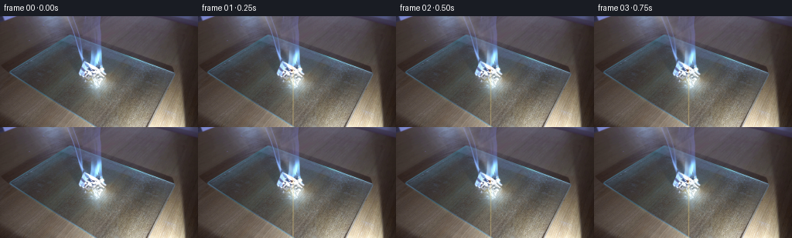
展开代码变化
--- 上一保存版本
+++ 本次保存版本
@@ -127,27 +127,27 @@
def add_flame(frame, time):
yy, xx = np.mgrid[0:HEIGHT, 0:WIDTH].astype(np.float32)
- base_x = 121.5
- base_y = 70.5
- height = 10.5 + 0.65 * np.sin(time * 7.1)
+ base_x = 122.0
+ base_y = 70.2
+ height = 7.6 + 0.55 * np.sin(time * 7.1)
v = np.clip((base_y - yy) / height, 0.0, 1.0)
center = (
base_x
- - 1.15 * v
- + 0.45 * np.sin(time * 5.2 + v * 4.5)
- + 0.22 * np.sin(time * 9.7 - v * 7.0)
- )
- half_width = 0.55 + 2.05 * (1.0 - v) ** 0.62
+ - 0.95 * v
+ + 0.42 * np.sin(time * 5.2 + v * 5.1)
+ + 0.24 * np.sin(time * 9.7 - v * 8.0)
+ )
+ half_width = 0.38 + 1.32 * (1.0 - v) ** 0.66
across = np.abs(xx - center) / np.maximum(half_width, 0.25)
- vertical_gate = smoothstep(1.04, 0.76, v)
- shape = np.exp(-2.2 * across**2) * vertical_gate
+ vertical_gate = smoothstep(1.02, 0.79, v)
+ shape = np.exp(-2.4 * across**2) * vertical_gate
shape *= smoothstep(base_y + 0.8, base_y - 1.0, yy)
- inner = np.exp(-4.4 * across**2) * smoothstep(0.88, 0.18, v) * vertical_gate
- flicker = 0.84 + 0.12 * np.sin(time * 8.4 + 0.7) + 0.06 * np.sin(time * 14.1)
+ inner = np.exp(-4.0 * across**2) * smoothstep(0.87, 0.18, v) * vertical_gate
+ flicker = 0.83 + 0.13 * np.sin(time * 8.4 + 0.7) + 0.06 * np.sin(time * 14.1)
fade = smoothstep(0.0, 0.28, time)
- outer_alpha = np.clip(shape * (0.22 * flicker) * fade, 0.0, 0.40)
- inner_alpha = np.clip(inner * (0.58 * flicker) * fade, 0.0, 0.78)
+ outer_alpha = np.clip(shape * (0.13 * flicker) * fade, 0.0, 0.28)
+ inner_alpha = np.clip(inner * (0.38 * flicker) * fade, 0.0, 0.55)
outer_color = np.array([255.0, 93.0, 18.0], dtype=np.float32)
inner_color = np.array([255.0, 221.0, 126.0], dtype=np.float32)
@@ -162,28 +162,28 @@
dy = yy - cy
angle = np.arctan2(dy, dx)
progress = np.clip(time / 5.0, 0.0, 1.0)
- radius = 1.0 + 2.9 * progress**0.68
+ radius = 0.7 + 2.0 * progress**0.72
irregular = radius * (
1.0
- + 0.15 * np.sin(5.0 * angle + time * 1.7)
- + 0.08 * np.sin(9.0 * angle - time * 1.1)
- )
- distance = np.sqrt(dx * dx + (dy * 0.78) ** 2)
+ + 0.19 * np.sin(5.0 * angle + time * 1.7)
+ + 0.10 * np.sin(9.0 * angle - time * 1.1)
+ )
+ distance = np.sqrt((dx * 1.05) ** 2 + (dy * 0.86) ** 2)
burn = smoothstep(irregular + 0.55, irregular - 0.75, distance)
burn *= smoothstep(63.0, 66.0, yy)
char_color = np.array([38.0, 29.0, 24.0], dtype=np.float32)
brown_color = np.array([91.0, 57.0, 35.0], dtype=np.float32)
- char_alpha = 0.72 * burn
+ char_alpha = 0.61 * burn
frame[:] = frame * (1.0 - char_alpha[:, :, None]) + char_color * char_alpha[:, :, None]
ring = np.exp(-((distance - irregular) / 0.85) ** 2) * smoothstep(63.0, 66.0, yy)
- ring *= 0.24 + 0.09 * np.sin(time * 9.5)
- frame[:] = frame * (1.0 - 0.32 * ring[:, :, None]) + brown_color * (0.32 * ring[:, :, None])
+ ring *= 0.20 + 0.08 * np.sin(time * 9.5)
+ frame[:] = frame * (1.0 - 0.22 * ring[:, :, None]) + brown_color * (0.22 * ring[:, :, None])
ember = np.exp(-((distance - irregular - 0.05) / 0.48) ** 2)
ember *= smoothstep(63.0, 66.0, yy)
- ember *= 0.24 + 0.10 * np.sin(time * 11.3 + angle * 2.0)
+ ember *= 0.17 + 0.075 * np.sin(time * 11.3 + angle * 2.0)
ember_color = np.array([255.0, 102.0, 22.0], dtype=np.float32)
frame[:] = frame * (1.0 - ember[:, :, None]) + ember_color * ember[:, :, None]
可观测工具轨迹
实际执行的命令与返回图片。
命令 1exit 0
/bin/bash -c "pwd && rg --files -g '"'!*'"\\.git/*' | sed -n '1,120p'"
命令 2exit 0
/bin/bash -c "printf '%s\\n' '--- prompt.txt ---'; sed -n '1,240p' prompt.txt; printf '%s\\n' '--- GENERATION_RULES.md ---'; sed -n '1,280p' GENERATION_RULES.md"
命令 3exit 0
/bin/bash -c "file first_frame.png; identify -verbose first_frame.png | sed -n '1,80p'"
命令 4exit 0
/bin/bash -c "sed -n '1,260p' artifact_io.py"
命令 5exit 0
/bin/bash -c "sed -n '1,260p' player_template.html"
命令 6exit 0
/bin/bash -c "python - <<'PY'
from PIL import Image
import numpy as np
im=Image.open('first_frame.png')
print(im.mode, im.size)
a=np.array(im.convert('RGB'))
print(a.shape,a.dtype,a.min(),a.max(),a.mean(axis=(0,1)))
print('corners',a[0,0],a[0,-1],a[-1,0],a[-1,-1])
PY"命令 7exit 0
/bin/bash -c "python - <<'PY' mods=['numpy','PIL','scipy','cv2','matplotlib','imageio','skimage'] for m in mods: try: mod=__import__(m); print(m, getattr(mod,'__version__','ok')) except Exception as e: print(m,'NO',type(e).__name__) PY which ffmpeg || true which convert || true which python"
命令 8exit 0
/bin/bash -c "python - <<'PY'
from PIL import Image
im=Image.open('first_frame.png')
# upscale full and focused central crop
im.resize((1024,576), Image.Resampling.NEAREST).save('.tmp/full_nearest.png')
im.crop((65,15,180,105)).resize((920,720), Image.Resampling.NEAREST).save('.tmp/paper_nearest.png')
im.crop((95,0,165,70)).resize((700,700), Image.Resampling.NEAREST).save('.tmp/smoke_nearest.png')
PY"命令 9exit 0
/bin/bash -c "python - <<'PY'
from PIL import Image
import numpy as np, cv2
im=np.array(Image.open('first_frame.png').convert('RGB'))
roi=im[:70,85:165]
g=cv2.cvtColor(roi,cv2.COLOR_RGB2GRAY)
s=cv2.cvtColor(roi,cv2.COLOR_RGB2HSV)[:,:,1]
# candidate smoke low saturation bright residual
for t in [70,80,90,100,110,120,140]:
m=((g>t)&(s<70)).astype(np.uint8)*255
Image.fromarray(m).save(f'.tmp/mask_{t}.png')
print(t,m.sum()//255)
# print per row plume center weighted brightness in x 95:150
for y in range(0,66,5):
row=g[y,10:60].astype(float)
print(y, round(row.mean(),1), int(row.argmax()+95), int(row.max()))
PY"命令 10exit 0
/bin/bash -c "python - <<'PY'
from PIL import Image
import numpy as np
im=np.array(Image.open('first_frame.png').convert('RGB'))
# print luminance rows of x 85:160 as rough chars
g=(.299*im[:,:,0]+.587*im[:,:,1]+.114*im[:,:,2])
chars=' .:-=+*#%@'
for y in range(0,72,2):
print(f'{y:02d} '+''.join(chars[min(9,int(g[y,x]-60)//12)] if g[y,x]>60 else ' ' for x in range(80,170)))
PY"命令 11exit 0
/bin/bash -c "python - <<'PY'
from PIL import Image
im=Image.open('first_frame.png')
im.crop((100,0,160,75)).resize((600,750), Image.Resampling.BICUBIC).save('.tmp/smoke_smooth.png')
im.crop((95,45,160,105)).resize((780,720), Image.Resampling.BICUBIC).save('.tmp/burn_smooth.png')
PY"命令 12exit 0
/bin/bash -c 'MPLCONFIGDIR=.tmp/mpl python generate.py'
命令 13exit 0
/bin/bash -c "python - <<'PY'
from PIL import Image
for i in [1,5,10,15,19]:
im=Image.open(f'frames/{i:02d}.png')
im.crop((95,40,155,100)).resize((600,600),Image.Resampling.NEAREST).save(f'.tmp/f{i:02d}_crop.png')
PY"命令 14exit 0
/bin/bash -c "python - <<'PY'
from PIL import Image, ImageDraw
frames=[Image.open(f'frames/{i:02d}.png') for i in [0,1,2,3,5,7,9,12,15,19]]
sheet=Image.new('RGB',(256*5,(144+18)*2),(20,20,24)); d=ImageDraw.Draw(sheet)
for k,(i,im) in enumerate(zip([0,1,2,3,5,7,9,12,15,19],frames)):
x=(k%5)*256;y=(k//5)*162
sheet.paste(im,(x,y+18));d.text((x+4,y+3),f'{i:02d}',fill='white')
sheet.save('.tmp/timeline.png')
PY"命令 15exit 0
/bin/bash -c "python - <<'PY'
from PIL import Image
import numpy as np
for i in [0,5,10,19]:
a=np.asarray(Image.open(f'frames/{i:02d}.png')).astype(float)
print(i,'mean',a.mean(axis=(0,1)).round(1),'smoke',a[20:55,105:140].mean(axis=(0,1)).round(1),'burn',a[60:80,105:140].mean(axis=(0,1)).round(1))
PY"命令 16exit 0
/bin/bash -c "python - <<'PY'
from PIL import Image
im=Image.open('frames/19.png')
im.crop((100,45,145,90)).resize((900,900),Image.Resampling.NEAREST).save('.tmp/f19_tight.png')
PY"命令 17exit 0
/bin/bash -c "python - <<'PY'
from PIL import Image
im0=Image.open('frames/00.png').resize((1024,576),Image.Resampling.NEAREST)
im19=Image.open('frames/19.png').resize((1024,576),Image.Resampling.NEAREST)
out=Image.new('RGB',(2048,576));out.paste(im0,(0,0));out.paste(im19,(1024,0));out.save('.tmp/compare.png')
PY"命令 18exit 0
/bin/bash -c "MPLCONFIGDIR=.tmp/mpl python generate.py && python - <<'PY'
from PIL import Image
im0=Image.open('frames/00.png').resize((1024,576),Image.Resampling.NEAREST)
im19=Image.open('frames/19.png').resize((1024,576),Image.Resampling.NEAREST)
out=Image.new('RGB',(2048,576));out.paste(im0,(0,0));out.paste(im19,(1024,0));out.save('.tmp/compare2.png')
PY"命令 19exit 0
/bin/bash -c "python - <<'PY'
from PIL import Image
im=Image.open('frames/19.png')
im.crop((100,45,145,90)).resize((900,900),Image.Resampling.NEAREST).save('.tmp/f19_tight2.png')
PY"命令 20exit 0
/bin/bash -c "python - <<'PY'
from PIL import Image
import numpy as np
for i in [0,1,2,3,4,5,10,15,19]:
a=np.asarray(Image.open(f'frames/{i:02d}.png')).astype(float)
print(i,'smoke',a[20:55,105:140].mean(axis=(0,1)).round(1),'burn',a[60:80,105:140].mean(axis=(0,1)).round(1))
PY"命令 21exit 0
/bin/bash -c "python - <<'PY'
from PIL import Image, ImageChops, ImageStat
import numpy as np
prev=None
for i in range(20):
a=np.asarray(Image.open(f'frames/{i:02d}.png')).astype(np.int16)
if prev is not None:
d=np.abs(a-prev)
print(i, 'mean',d.mean().round(3),'changed',int((d.max(2)>2).sum()),'max',d.max())
prev=a
print('frame0 exact',np.array_equal(np.asarray(Image.open('frames/00.png')),np.asarray(Image.open('first_frame.png'))))
PY"命令 22exit 0
/bin/bash -c "python - <<'PY'
from pathlib import Path
from PIL import Image
import numpy as np
p=Path('.')
frames=sorted((p/'frames').glob('*.png'))
assert len(frames)==20, len(frames)
shapes={Image.open(f).size for f in frames}
print('frames',len(frames),'sizes',shapes)
a=np.asarray(Image.open(frames[0]).convert('RGB'))
b=np.asarray(Image.open('first_frame.png').convert('RGB'))
print('frame00_identical',np.array_equal(a,b))
print('pixels_npz', (p/'pixels.npz').is_file(), (p/'pixels.npz').stat().st_size)
print('index_html', (p/'index.html').is_file(), (p/'index.html').stat().st_size)
print('inspection', (p/'inspection.png').is_file())
PY
python -m py_compile generate.py"命令 23exit 0
/bin/bash -c "git status --short 2>/dev/null || true; ls -lh generate.py pixels.npz index.html inspection.png | sed -n '1,20p'"
视觉工具实际返回图片 1
视觉工具实际返回图片 2
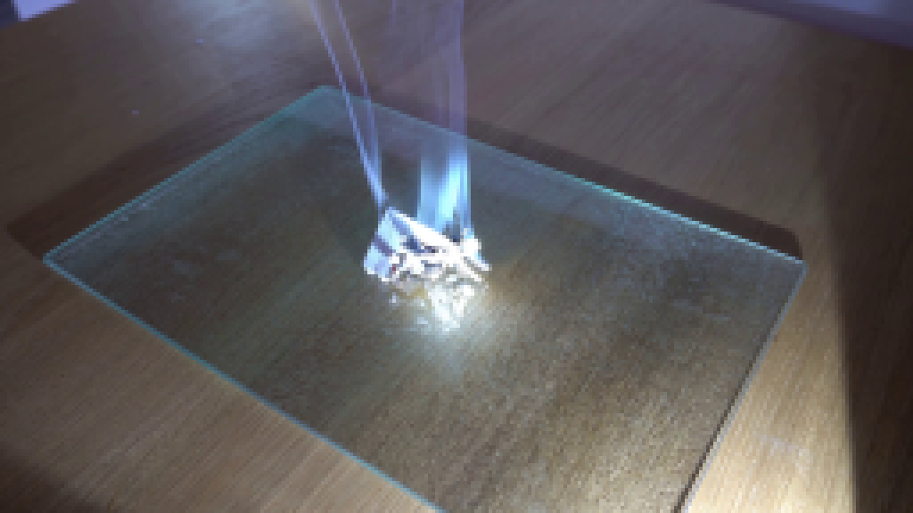
视觉工具实际返回图片 3
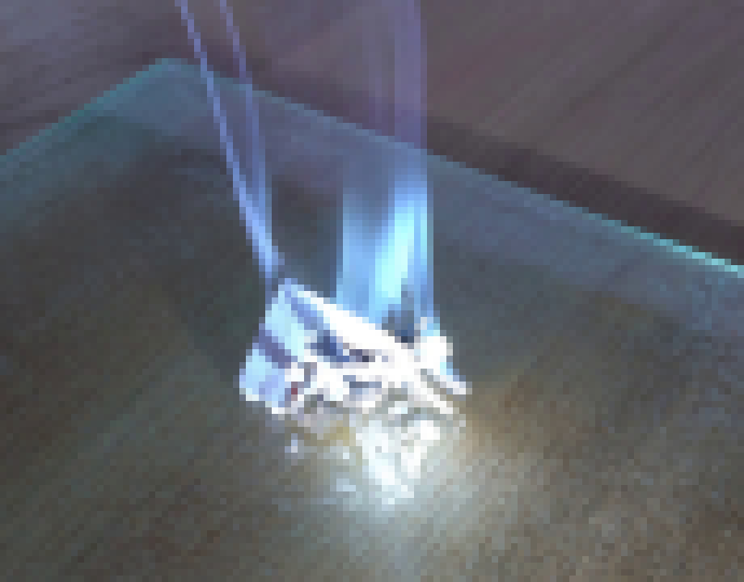
视觉工具实际返回图片 4
视觉工具实际返回图片 5
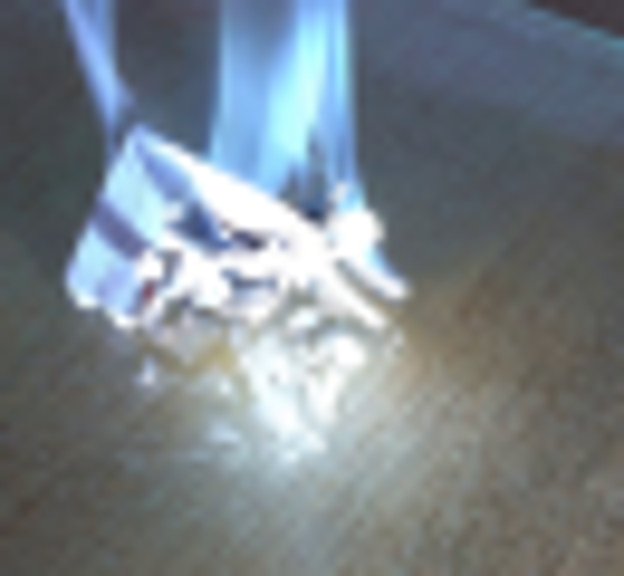
视觉工具实际返回图片 6

视觉工具实际返回图片 7
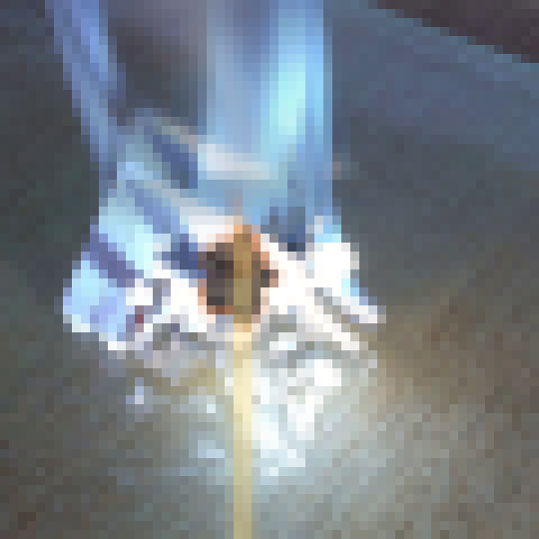
视觉工具实际返回图片 8
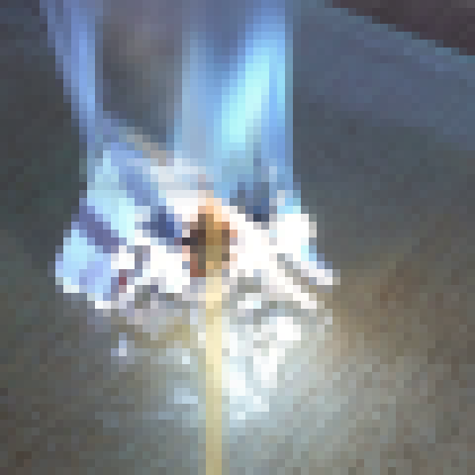
视觉工具实际返回图片 9
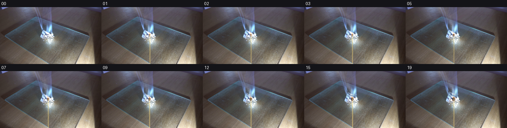
视觉工具实际返回图片 10
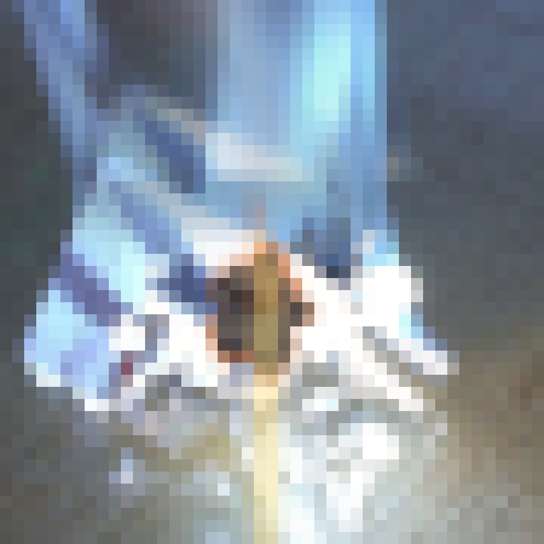
视觉工具实际返回图片 11
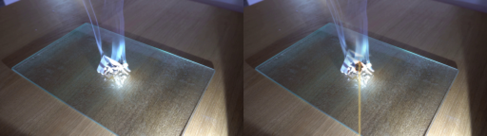
视觉工具实际返回图片 12
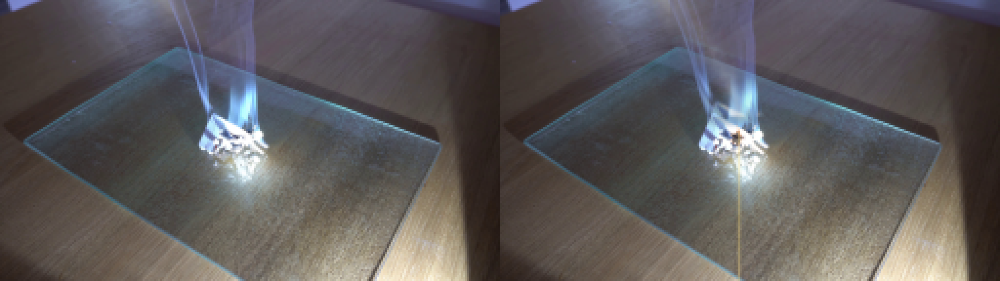
视觉工具实际返回图片 13
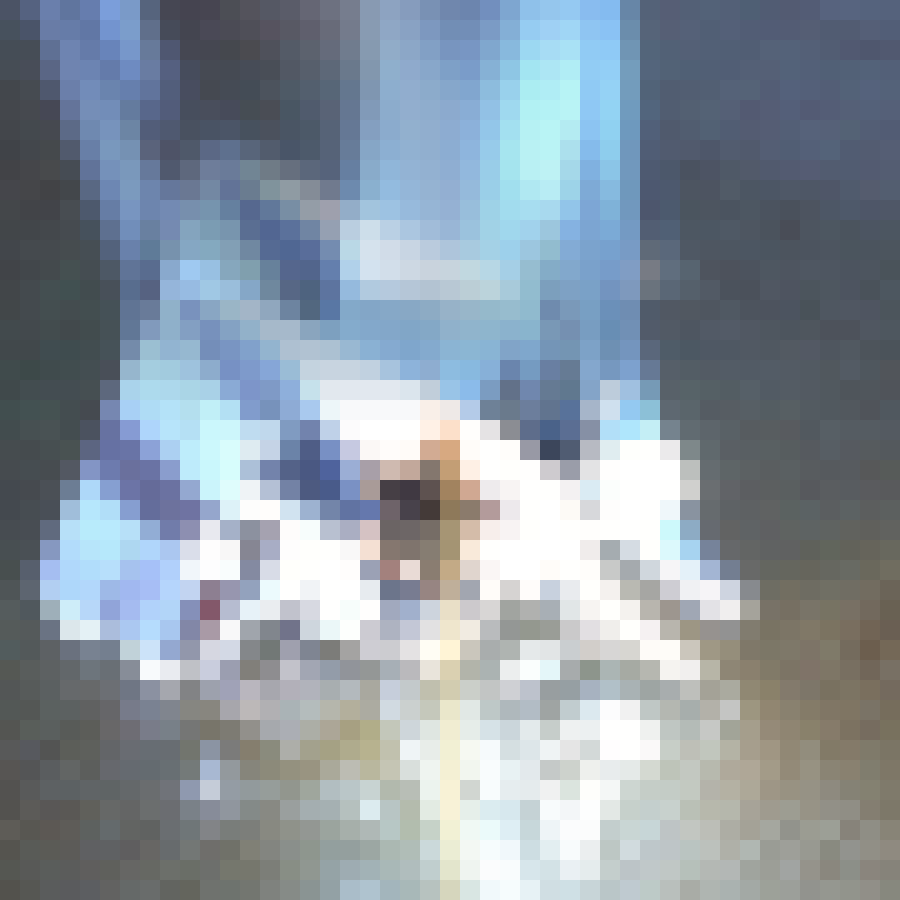
视觉工具实际返回图片 14

保存候选 2 份；完成命令 23 次；可验证图片返回 14 张。原始 API 响应与完整日志保留在本地。